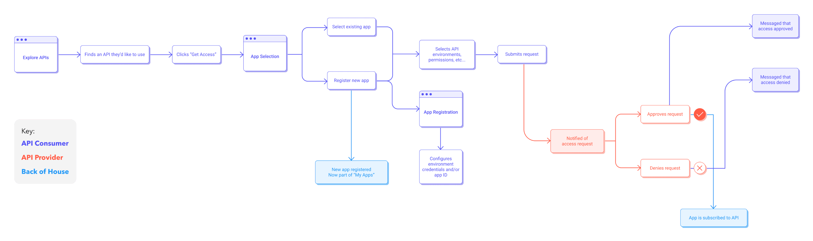
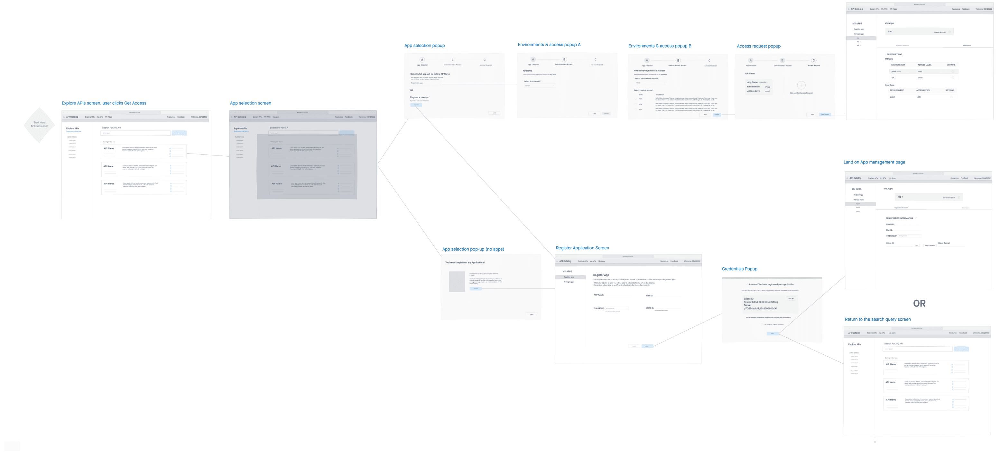

Ford’s API Catalog is a one-stop-shop for Ford developers to build, register, and publish well-designed APIs.
An API, or application programming interface, is a set of rules that acts as an intermediary between two applications, allowing data to be transferred between them.
Ford’s internal API Catalog is a one-stop shop for software developers to find, build, publish, and provide REST APIs. The Catalog also provides tools and guidance for designing REST APIs to meet Ford quality and security standards.
In its current state, the API Catalog’s Provider Journey allows Ford developers to publish APIs that are displayed on the Catalog for other internal developers to find and use, to promote reuse of company assets. However, current API consumption processes at Ford are decentralized and tedious. They also vary depending on which gateway the API is hosted in.
Our team asked the following question:
How might we allow Ford software developers to consume APIs provided by other teams in a gateway agnostic way, to eliminate rework and automate API consumption?
We designed our Consumer Journey to enable Ford software developers to use the API Catalog to find an existing API, and consume, or “subscribe to” that API’s functionality. When complete, we envision this process to automate a significant portion of current, manual API consumption, saving Ford time and money.
Our team is somewhere between lean and agile philosophies - we use strategies from both while following design thinking methods to focus on delivering user value. This consumer work is being done as a sprint (well, actually 2 - and we’ll talk about that later) with 4 iterations over 4 months. We began with identifying the user journey and brainstorming rough user flows. We moved from there to low fidelity prototyping, then on to high fidelity - validating after each iteration.
Product Designer
July 2021 - Present
Remote
I’ll walk through the highlights and some notable challenges faced throughout the course of this work.
We knew from previous research that many Ford development teams both provide and consume APIs. Therefore, we knew our current primary persona represented both of our user groups, (API Providers and API Consumers) and would remain relevant throughout this sprint.
With our target users in mind, we worked through a hybrid user journey/process flow to identify current process gaps and capture the basic functionality necessary to provide user value. Our flow includes steps taken by Consumers, Providers, and some considerations for our backend.
 API Catalog Consumer Journey Process FlowUsing this diagram, we brainstormed the initial design and sketched out a basic flow using Invision. At this stage, we decided to divide the work into two sprints: application registration, and API subscription. In our sketches, we identified that application registration must come before subscription - thus we decided to focus on delivering that value first.
 Consumer Journey User FlowAs we continued to ideate and flesh out the design for the application registration flow, we often turned to users for quick feedback. We used unmoderated, asynchronous methods like surveys, polls, and preference tests to help with early design decisions before we ever began validation.
A great example of this was a preference test we ran for an early version of the application management screen. To determine the best way to display credentials to users, we ran a quick preference test asking users the same set of usability questions for each design, then asking them to pick their preferred design and explain their reasoning.
After the preference test, we moved into our first round of validation using the clear winner: Design A. At a high level, our goal was to verify that users understood the registration and management process at a conceptual level, and then identify whether any features were troublesome.
You can view our validation report here.
Overall the design was successful, but participants struggled with our new dual secret model. With this model, we allow users to create a second client secret so that in the event of a mistake or expiration, their secrets can be rotated without downtime to their application.
In fact, none of our participants understood this new concept as conveyed by our design. So we went back and ideated further until we came up with a design we felt better conveyed the intention of the dual secret model. In this version, secrets are color coded by status, and clearly display both the generation and expiration dates, while allowing users to delete a secret as long as two are available.
We revalidated using this design, and had an 80% success rate rotating secrets - a resounding improvement over the first version.
View an export of our prototype and our second validation report.
After validation, we constructed high-fidelity mockups to hand off to our development team. However, right before handoff, we learned of a new requirement that changed everything for our consumer journey. [dun-dun-dun]
A proximate team requested that we take ownership of an API onboarding feature they had helped us build and maintain. This made a lot of sense for us, as it provided more value as a part of our product suite, both from a user and business perspective. However, we determined that it would need to be included in our Consumer Journey, and that we would undergo another design iteration to integrate it.
There were four new requirements we needed to fulfill:
Paired IDs
Application IDs as a pair: one for prod, one for pre-prod
Multiple Gateways
Separate pairs of Application IDs for each of two API gateways
Multiple Regions
Separate pairs of Application IDs for China vs Global (rest of world)
Independence
Application ID generation as an independent feature, not required for users who don’t need it
The first requirement was especially challenging, conceptually, because our existing client credentials functionality allows users to request a set for each lower environment, rather than one pre-prod set to represent all. This created a mismatch between the way credentials and Application IDs were assigned.
Since we were already in high-fidelity, we just ideated with the current screens, experimenting different ways to display the data while separating the conceptual models of IDs and credentials.
We agreed on the additional tab and underwent another round of validation, to disheartening results: The tabbed design implied process linearity rather than independence to participants. Users generally followed tabs from left to right, using each feature as they progressed. Other users didn’t even see the tabs. Around the same time, our development team was dealing with several state change bugs brought on by the implementation of the tabbed design.
The team had already been through 3 major iterations of this design, and we were feeling the pressure to conclude our work here and move onto the next sprint. Stakeholders believed we didn’t have the time or resources to undergo another iteration, despite our validation outcome. The team talked about creating tutorials and instruction documentation to fill the gaps uncovered by our validation.
At this point, I had to dig deep in the face of adversity. I remembered why UX is my passion - I am the user’s voice, where they would otherwise have none. I value usability and feel strongly about advocating for it - so I pushed back. Still, the team remained skeptical, so I went back to the drawing board.
I knew I’d have to think beyond the tabs and approach the problem from a fresh perspective. I reflected on the Catalog’s vision to be a “one stop shop” for developers - and that vision was precisely what this design needed. When I think of a “one stop shop” for metadata, I think of a dashboard. So I created a dashboard design with all functionalities weighted equally, but separated into their own containers. Additionally, the dashboard was easily manipulated to be responsive, accommodating 99% of our users’ screen resolutions - a data point I collected from our Mouseflow metrics.
I advocated for another round of validation, and executed it within 3 days. Our validation goals were simple, and similar to previous rounds:
The dashboard was a resounding success. 100% of participants were able to use every dashboard feature with no errors. Participants commented about how much of an improvement over current processes the dashboard was, and repeatedly asked when it would be available.
Check out the interactive prototype we used for the validation interviews and have fun clicking around!
You can also peruse the validation report and view success rates for each task! 🎉
After validation, I worked to make sure each screen was spec’d out for a variety of screen resolutions. Since 99% of our users’ screen resolutions fell between 1280px and 1600px, I created layouts for a range of 3 screen sizes: 1280, 1440, and 1600.
Implementation is currently underway - our development team has constructed the skeleton layout of the page and is putting finishing touches on the registration information section at the top of the screen.
Remember the second sprint for the Consumer Journey? Subscriptions!
How might we allow these registered applications to be subscribed to APIs?
The API Platform designers are working to answer this question in Q1 of 2022!
Throughout this sprint, persistence was my best friend. Working through dozens of ideation sessions and as many iterations/validations as we did can be disheartening. A pivotal moment for me came after our 3rd iteration, when our validation yielded disappointing results, and our team wanted to press forward. I remember standing in front of my computer after an animated standup, asking myself where I was falling short as a designer, and how I’d be able to pull the pieces of this sprint together in the best interests of our users and our team. Because I couldn’t justify backing down and abandoning my principles as a designer.
I capitalized on this feeling of frustration and turned it into determination - as an athlete in my personal life, I have never been one to back away from a challenge. And with some extra effort and commitment not only to my users, but to myself, I was able to solve a tough problem, and learned some important lessons along the way.
I learned not to abandon my principles, even when it goes against the status quo and creates discomfort. I learned (again) to persist through difficult challenges, no matter how impossible they seem at the time. Because at the end of the day, my persistence came with a meaningful payoff, and it felt incredible to know that the users I had advocated for were delighted by my effort.
{kind=link}
{kind=link}
{kind=link}
{kind=link}
{kind=link}
{kind=link}
{kind=link}
{kind=link}
{kind=link}
{kind=link}